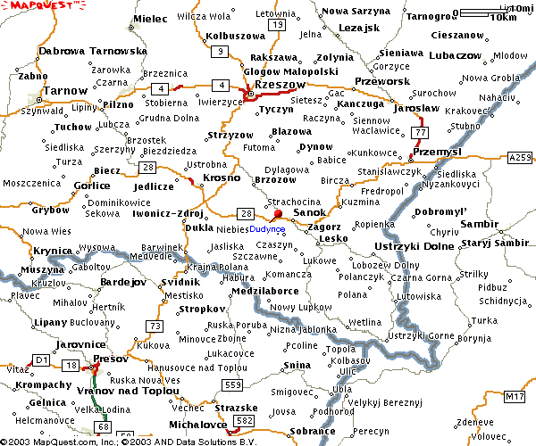

LOCATION
OF DUDYNCE
Other
People Researching this Village
DNA
MAP OF DUDYNCE AND SURNAMES
THAT I RESEARCH
Location of Dudynce, sometimes spelled Dudynci:
Map coordinates are 4933 2205. Dudynci is located near the town of
Sanok (now in southeastern Poland). Please notice that my ancestral
villages are located near the towns of Dukla, Sanok (now in
southeastern Poland) and Svidnik (in northeastern Slovakia). These
villages form a triangle whose corners are about 30 miles apart, yet
my grandparents who emigrated from those areas between 1890 and 1910
met and married in the USA.
.
Surnames from this village in my ancestry are:
Kotlarz/Kotlar, Wdowiak, Warcholyk, Juszczyk, Pastuszak, Mediuch,
Kocan, Jacubowski, Maczuzak, Kolodiej Greek Catholic church records
for this village have been microfilmed and are available at the FHL
in your area(film #0766036, parish of Pielnia).
http://www.archiwa.gov.pl/?CIDA=376
SEZAM
the Date Base of the Przemysl Archive in Poland
also has the data. More recent information can be obtained from the
Civil Registry Office: Archive Zarzyn, Urzad Stanu Cywinego w Zarzyn,
69-200 Sulecin, ul. Lipowa 18, POLAND
My maternal grandmother, Anna Kotlar (b. 1893)
emigrated as a single woman from Dudynce in 1910 and settled in
Wilkes-Barre PA. Several cousins and a half-brother had preceded her
and a sister joined her a year later.
I have reviewed Dudynce’s Greek Catholic
Church birth records (Pielnia parish) and arranged them by house
number so one can identify the families that simultaneously occupied
a house. See the index on my front page.
In
2010 a survey of the village Greek Catholic cemetery was done. Click
here
to see the list of souls.
Back
to menu
Email
me at carpatho_mts@hotmail.com
OTHER
SURNAMES OF DUDYNCE
OTHER
SURNAMES FROM THE VILLAGE OF DUDYNCE obtained from review of the
church records 1839 - 1871
These surnames
were gathered from the Greek Catholic records of the Parish of
Pielnia
for the village of Dudynce
only. Handwriting in the records was difficult to read so please
understand that the spelling of some surnames may be inaccurate.
Also it seemed that in a few cases the priest, in some entries,
spelled a surname several different ways.
Adamski, Ambicki, Basna,
Bieleski, Brechun, Breyla, Brsyla, Dudynski, Forsysik,Furdak,
Galgatko,Gliszczak, Gulycz, Hlystiak, Hnaluk, Hystiak, Kasminski,
Kozlowski, Kuchanyk, Kucharyk, Kuchazuk,Kuzniak, Lakos, Lwaniany,
Lyowski, Maciejowski, Maranski, Mareyko, Mazur, Micznik, Mjedziuch,
Noryak, Olejansky, Paluk, Pank, Pasznik, Poryliski, Porzbski,
Poskanyk, Pospolitak, Purzczynski, Sawka, Senko, Senkow,Sokolowski,
Strucz, Stysz, Suszko, Suszkow, Swirk, Szayniak, Tymik, Tyszyk,
Walral, Watral, Wawasat, Wawer, Wozny
During
the period 1892-1924, the surnames of approximately 116 individuals
from Dudynce were recorded on ship manifests at Ellis Island. Some
of them are:
Ambricky, Barecka, Borchun,
Brechom/Brechun, Brehm, Drwienga, Hayniah, Hiertak, Kotlarz/Kotlar
(also spelled or misspelled as:
Koblarz/Kathasz/ Hotlarz), Hutak, Jakobanska,
Jakubowski, Juszczak/Jusczyk, Kafara,
Kilvelzig,Koladziej/Kolodziej/Kotodziej/Kolodrzej/ Kolodzey,
Kolody,Kowalezuk, Kowalczyk Krall/Krell/Kroll, Kuchaska,Kucharek,
Lakalowski, Lakus, Lipka,Liseski,
Lorene, Moczuzak (spelled
M0czuzak by transcriber)
Maczuzak/Macuzak/Maczuziak/Maczuziek/Matuszak,
Maciejowska, Macigowski, , Maranske, Matusak,
Miedziuch/Miedznich/Moedzuch/Medinch/Miedzisek, Moranski, Nadogan,
Naranski, Nedohom, Niedzinch, Orustein, Pachanik, Paluk,
Patrylak/Patrilak, Pattyka, Postuszka Sokolowski, Suszko,
Szajmak/Szajniak/Szajnak/ Szapriak, Szeniak, Swirk, Tuszko, Vacruzak,
Wahus, Wanio, Wansholek/Warcholik/Warcholic, Wdowiak/Wdocoiak,
Wozniak, Wozney, Zoszak You
can see that you have to be creative with spelling when searching the
Ellis Island records. There are many transcription errors, but in
spite of that you can find some vital information on your immigrant
ancestor through these records.
Return
to menu
Contact
me at carpatho_mts@hotmail.com
OTHER
PEOPLE RESEARCHING SURNAMES in DUDYNCE
Would
you like to post your email address and surnames from Dudynce (or
specific nearby village) here? Email me at carpatho_mts@hotmail.com
maryache@ptd.net
is searching surnames MACZUZAK/MACHUZAK/MATUZAK,
AMBICKI, KOLODIEJ
M
Kolody (mkolody@roadrunner.com
) is searching the surname KOLODIJ
G.
Dolnack (no current email address) is researching surnames GAGATKO
from village of Pielnia (0.7 miles from Dudynce) and SZUBA
from village of Izdebki (14 miles from Dudynce)
perted@cox.net
is researching Tomasz Paul WDOWIAK,
b. 1895 in Pobiedno (4.6 miles SE of Dudynce) He immigrated to the
US in 1914. His mother was Antonia BREJT,
b. Pobiedno; also researching Antonina Teresa BAK,
b. 1904, Pobiedno who immigrated in 1921. Her father was Michael
BAK,
mother Maria PIETROWSKI
and grandmother Franciszac SKIBA
Ksindell@cfl.rr.com
and Memphishughes@msn.com
are researching surnames SZAJNIAK
and KOTLAR
from Dudynce
bruiser141@comcast.net
John is seeking information on SUSZKO
and connections to these other names through the marriages noted
below. My grandmother, Mariya (Mary) Suszko Mosko
(1894-1985), was born in Dudynce and immigrated to Perth Amboy, NJ in
1909. Her mother was Salome(a) Pastuszak,
the daughter of Wawzynec and Mary. Mariya's sister Eva married John
Kotlar,
her sister Anna married John Rolnick,
and her brother Michael married Stanislawa (?). These marriages took
place in or near Dudynce ca. 1905-1915. In addition, her brother John
Suszko
married Lena Neiman
in the US and settled in Marion Heights, PA
Also
seeking information on Gagatko,
Pastuszak, Furdock, and Szajniak or Shayniak
(Eng. - Shannock) as they are related to Suszko's by marriage.
Seeking information on Moszczar
became (Mosko or Mosher in the US), Chowanec,
de Polyniak
from Labowa, Labowiec, Kotow, and Uhryn Wisni, in Powiat Nowy Sacz.
Leon and Alexandra Chowanec Moschar immigrated to Perth Amboy in the
early 1883.
zebiocoimet@yahoo.fr
is researching surnames SUSZKO
and KOTLAR
from the village of Dudynce
bevymail@yahoo.com
is researching John Furdak/Ferdak/Verdak
from Pielnia who married Magdalena Kowalczyk
and settled in Vandling, PA
peekaboobrat@yahoo.com
is searching for BEDNARCZYK
BEDNARIK MOSKAL MASKAL MOSKALIK LIPKA
Most settled in NE PA Susquehanna Lackawanna [bordering Wayne
counties of PA]. My Great Grandfather Michal BEDNARCZYK
b. Feb 1854-Austria d. Jan 1904, settled in PA, USA, with wife
Kataryna MOSKAL
BEDNARIK
AKA Catherine BENARICK
b. Nov 1854 Or 1857 in Austria Now Poland died March 1929 Forest City
PA. Cath'a Married Philip WOLCHINSKI
[various spellings b. 1865-1920 after BEDNARCZY
patricia.pascanik@gmail.com
I
am looking for info on my Great Grandparents….the last name is
Paskanyk
and the towns are Dudynce and Pielnia…..My Grandfathers name
was Peter and Grandmother Eva Majuk.
Return
to menu